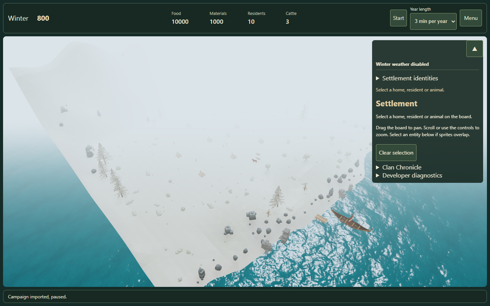
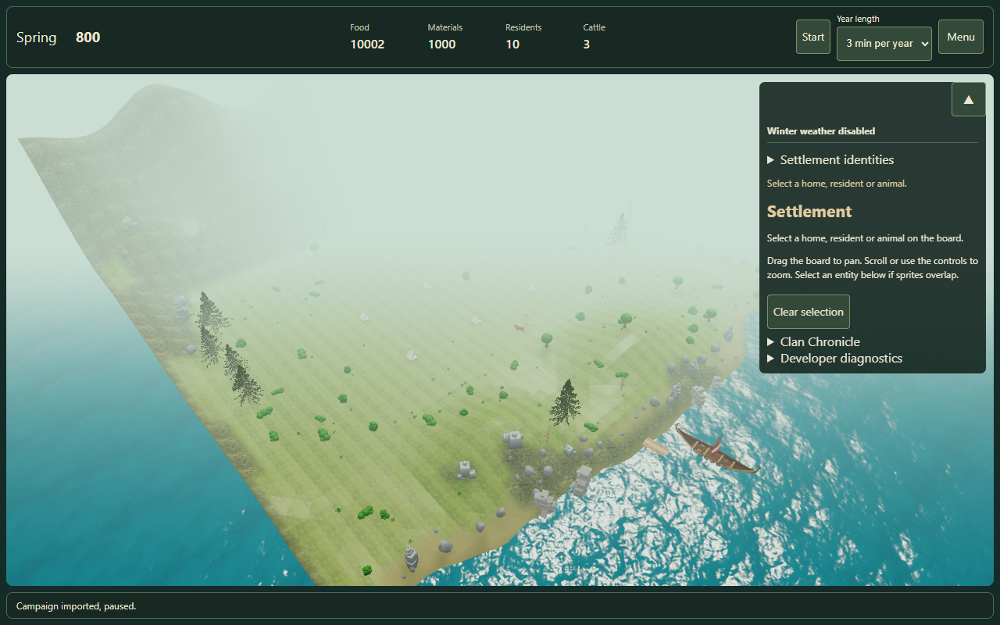
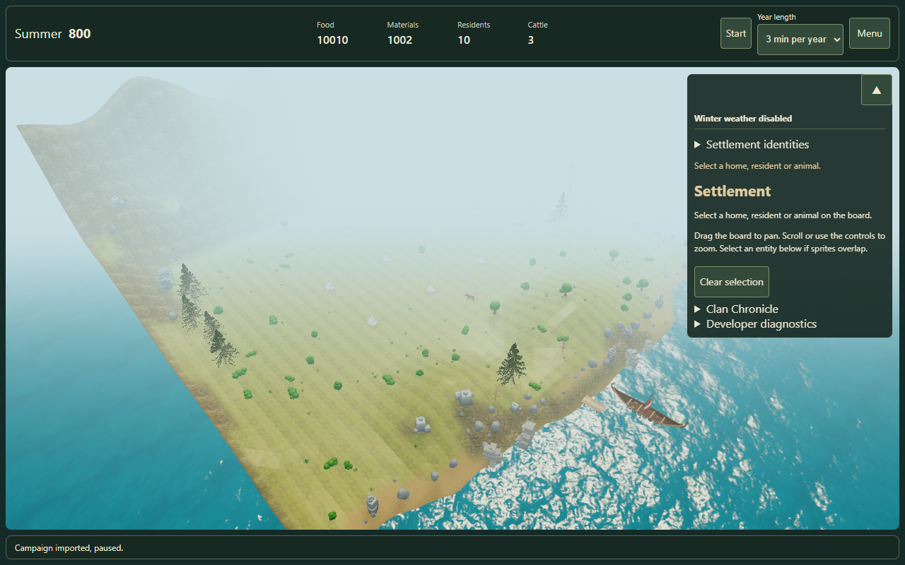
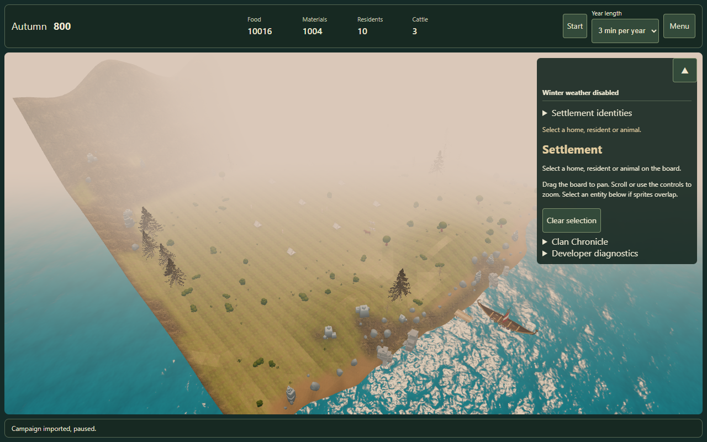
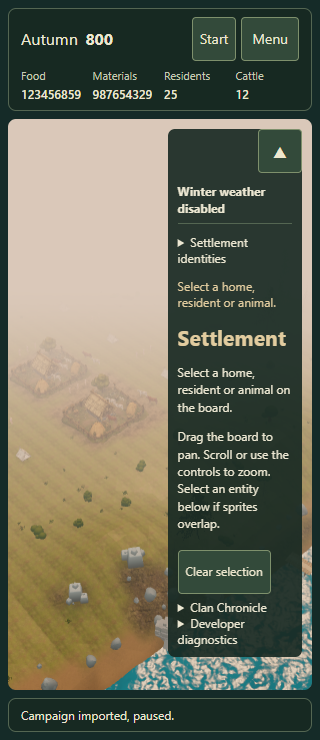
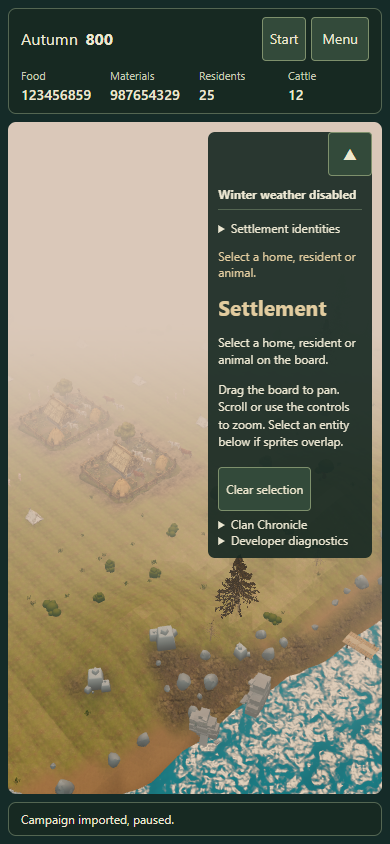
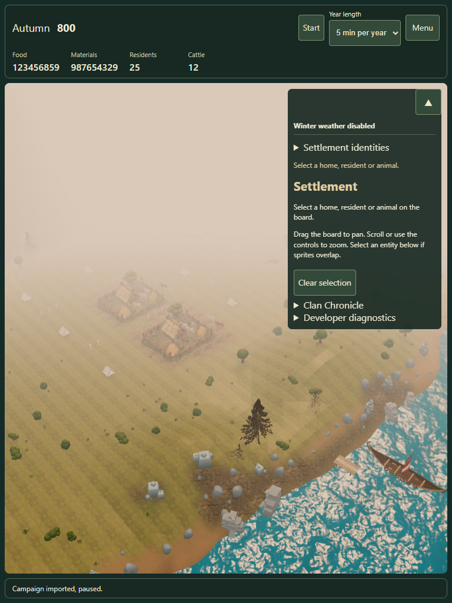
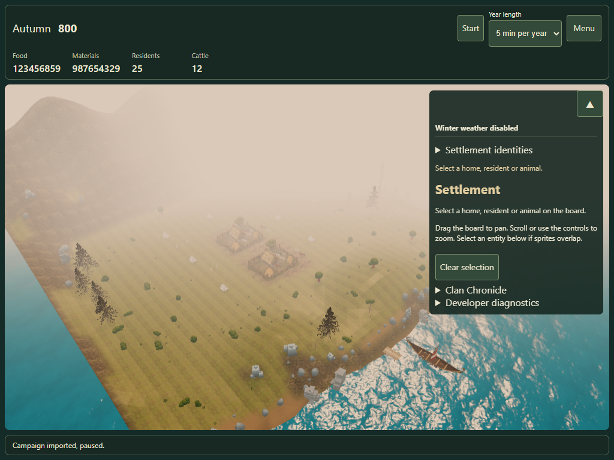
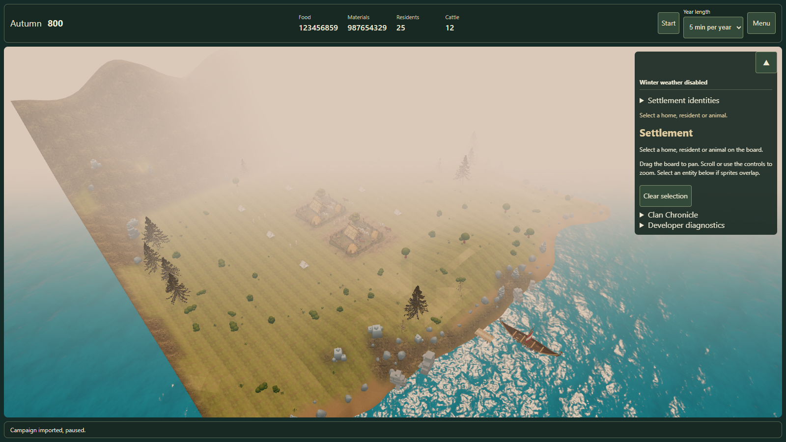

One saved Core year: Winter → Spring → Summer → Autumn. These controlled weather-off captures reuse the existing seasonal tint, light and snow. They share the same seed, camera, viewport and Low quality. Water animation phase can vary between captures; stocks reflect real within-year production.
The date has fixed season/year slots. KPIs stay centred on desktop and move to a deliberate second row on tablets/phones. Timing and Menu are separate. QA report · Measured observations · Playtest









Touch viewports use Edge/WebGL emulation. New physical iPad/Safari verification remains separate. Scene composition, background geometry, water reflection work and gameplay balance are outside this presentation slice.